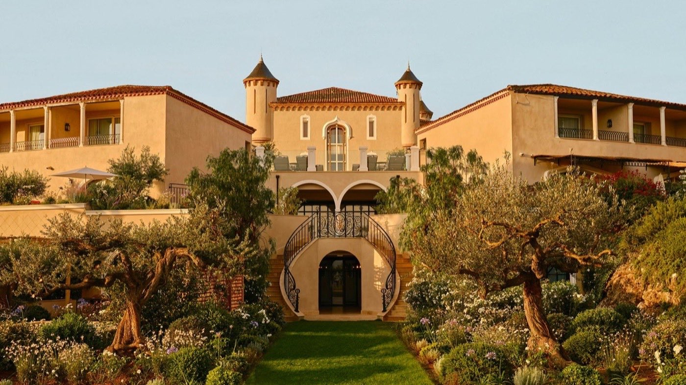
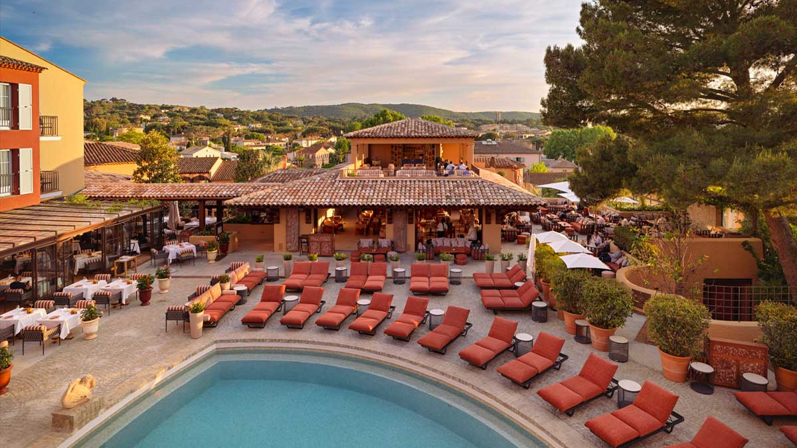
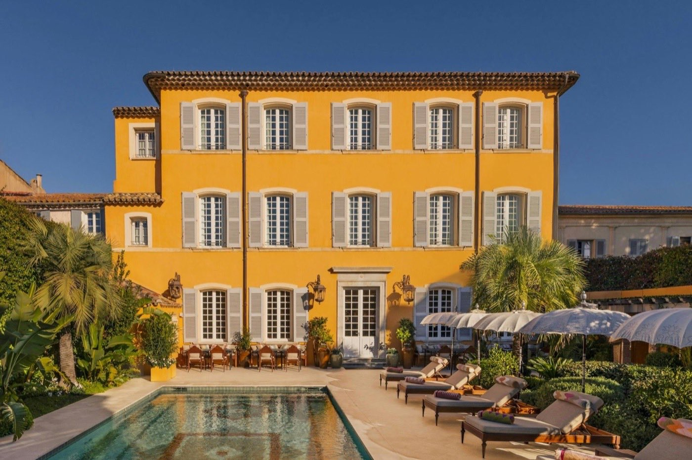
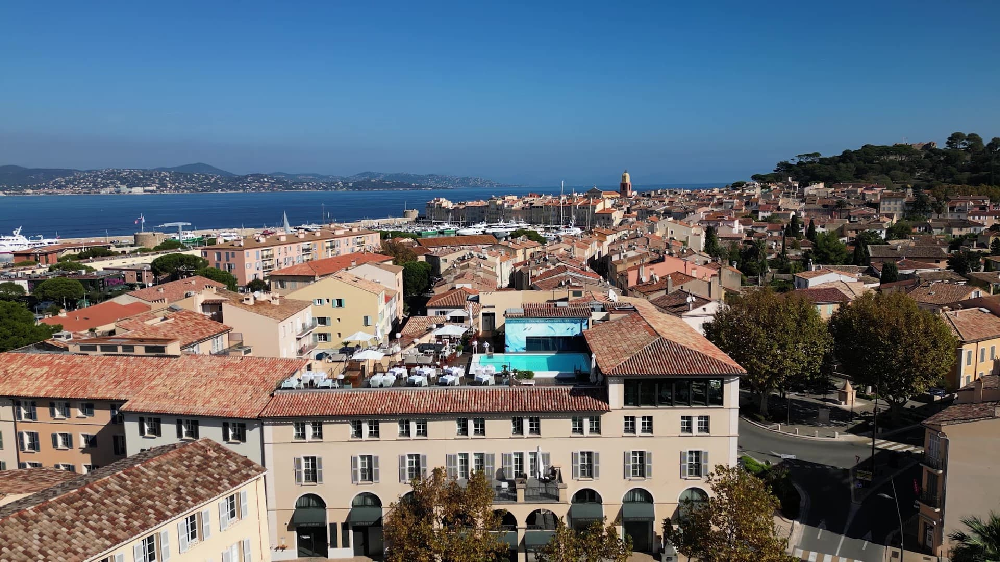
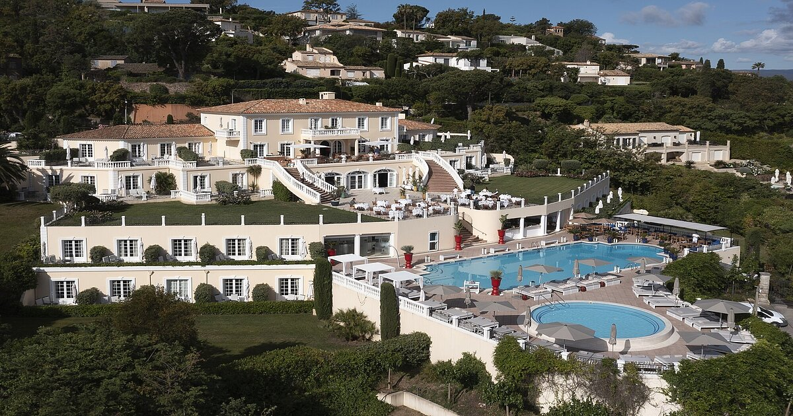

Les meilleurs hôtels de luxe à Saint-Tropez : Palmarès 2026
Saint-Tropez compte 45 hôtels, dont une douzaine revendiquent le luxe.
Huit méritent vraiment l'attention, avec, pour chacun, son score, ses prix réels
haute et basse saison, et son bémol.
Par Lucas Lecoq, rédacteur en chef✺Publié le 21 juillet 2026✺14 min de lecture
La Réserve Ramatuelle, première du palmarès. Photo : site officiel.
Les visuels de cet article proviennent des établissements cités.
TL;DR : l'essentielLe podium tropézien 2026
La Réserve Ramatuelle, 9,4/10 : 27 clés seulement,
le meilleur spa de la presqu'île et La Voile, 2 étoiles Michelin.
Château de la Messardière (Airelles), 9,0/10 : distinction
Palace depuis 2012, navette gratuite vers Pampelonne.
Sezz Saint-Tropez, 8,8/10 : rouvert en mai 2026,
chambres-villas de plain-pied et restaurant Colette étoilé.
Pour les budgets plus raisonnables : le Sezz (dès 480 €) et
l'Althoff Villa Belrose (dès 450 €) offrent le meilleur rapport qualité-prix. Et l'écart
basse/haute saison va de +88 % (Hôtel de Paris) à +445 %
(La Réserve) : le mois de réservation pèse plus lourd que le choix de l'hôtel.
La grille LMHS Destination : comment nous avons noté
Ce palmarès applique la grille LMHS Destination, la déclinaison du Protocole LMHS réservée à nos classements par ville. Elle note sur 10 et pondère cinq critères : rapport qualité-prix (25 %), spa & bien-être (25 %), localisation (20 %), service (20 %) et avis clients vérifiés (10 %). Elle se distingue du Protocole LMHS classique, noté sur 20 sur quatre piliers égaux (Luxe, Mise en scène, Hospitalité, Soin), qui sert à notre palmarès national des 50 meilleurs hôtels & spas de France.
Les deux notes ne sont donc pas interchangeables : elles ne mesurent pas la même chose. Deux adresses de ce palmarès figurent d'ailleurs aussi au classement national, où elles sont évaluées sur 20 : La Réserve Ramatuelle (17,4/20, 7e place nationale) et Lily of the Valley (16,1/20, 14e place).
Le tableau comparatif : scores et prix réels
Rang
Hôtel
Score LMHS
Basse saison
Haute saison
Écart
01
La Réserve Ramatuelle
9,4/10
1 100 €
6 000 €
+445 %
02
Château de la Messardière
9,0/10
700 €
2 500 €
+257 %
03
Sezz Saint-Tropez
8,8/10
480 €
1 200 €
+150 %
04
Byblos Saint-Tropez
8,5/10
555 €
2 045 €
+268 %
05
Pan Deï Palais
8,3/10
490 €
2 200 €
+349 %
06
Hôtel de Paris Saint-Tropez
8,1/10
970 €
1 827 €
+88 %
07
Lily of the Valley
8,0/10
650 €
2 425 €
+273 %
08
Althoff Villa Belrose
7,8/10
450 €
1 100 €
+144 %
Prix indicatifs chambre standard par nuit, taxes non incluses.
Sources : sites officiels, Booking.com, Expedia, relevés en juillet 2026.
Palmarès : les 8 meilleurs hôtels de luxe à Saint-Tropez
01
La Réserve Ramatuelle 9,4/10
Pour qui : ceux qui veulent le meilleur spa de la presqu'île et une intimité absolue, sans compromis sur la gastronomie.
Vingt-sept clés seulement, 8 chambres, 19 suites, dans une pinède de Ramatuelle signée Jean-Michel Wilmotte. La vue plonge sur la Méditerranée depuis chaque terrasse. L'ambiance est celle d'une villa privée très bien tenue : pas de hall bruyant, pas de groupes, juste un service discret et compétent. Le spa dispose de deux piscines chauffées (une intérieure avec vue mer, une extérieure), d'un hammam et d'une salle de sport. Le restaurant La Voile, 2 étoiles Michelin, est l'une des meilleures tables de la Côte d'Azur. 96 % des clients recommandent l'établissement sur 637 avis vérifiés.
Le bémol LMHS : pas de plage privée sur site. Il faut prendre la voiture (5 min) pour rejoindre l'Escalet ou Pampelonne. Pour un Palace à ce tarif, c'est un manque réel.
Ramatuelle · Dès 1 100 €/nuit en basse saison · Dès 6 000 € en haute saison ·
Site officiel →
02

Château de la Messardière 9,0/10
Pour qui : familles et couples cherchant un Palace historique avec accès facile à Pampelonne et une navette incluse.
Distingué Palace par Atout France depuis 2012, l'un des trois Palaces de la presqu'île avec La Réserve Ramatuelle et le Cheval Blanc Saint-Tropez, niché dans 13 hectares de pinèdes. 103 chambres et suites rénovées en 2021 par le groupe Airelles, spa Valmont, piscine de 25 mètres avec vue sur la baie. L'atout maître : une navette gratuite (bus et Rolls-Royce) vers Pampelonne et le centre-village, ce qui compense l'éloignement relatif. Le restaurant Acacia est unanimement salué pour sa cuisine et son panorama. Notes clients entre 9,5 et 9,8/10 sur les plateformes majeures.
Le bémol LMHS : le spa peut être animé et bruyant en pleine saison, loin de la sérénité attendue à ce niveau de prix. Quelques chambres d'entrée de gamme accusent leur âge malgré la rénovation.
Saint-Tropez · Dès 700 €/nuit en basse saison · Dès 2 500 € en haute saison ·
Site officiel →
03
Sezz Saint-Tropez 8,8/10
Pour qui : amateurs de design contemporain, couples en quête de calme à deux pas de la plage des Canebiers, et gastronomes.
Le Sezz a rouvert le 1er mai 2026 après rénovation, pour ses 15 ans. Christophe Pillet a conçu 35 chambres et 2 suites « façon villas » de plain-pied, chacune ouvrant sur une terrasse privée avec douche extérieure, un détail qui fait toute la différence. La piscine chauffée de 200 m² est l'une des plus belles de la presqu'île. Le restaurant Colette est étoilé Michelin depuis 2021. Le spa Susanne Kaufmann, le bar Dom Pérignon et la navette électrique gratuite vers le centre complètent une offre cohérente et sans esbroufe.
Le bémol LMHS : situé à 2 km du centre, l'hôtel exige la navette ou un taxi pour rejoindre le port et la place des Lices. Pas idéal si vous voulez tout faire à pied.
Saint-Tropez · Dès 480 €/nuit en basse saison · Dès 1 200 € en haute saison ·
Site officiel →
04

Byblos Saint-Tropez 8,5/10
Pour qui : ceux qui veulent l'adresse la plus mythique du village, une plage privée à Pampelonne et une vie nocturne intégrée.
Fondé en 1967, le Byblos est l'hôtel 5 étoiles saint-tropézien par excellence, celui dont tout le monde parle. 97 chambres aux couleurs provençales chaudes, restaurant Il Giardino, Skybar en rooftop (ouvert en 2025) et la légendaire boîte Les Caves du Roy en sous-sol. La plage privée Byblos Beach à Pampelonne est accessible par navette gratuite. Note TripAdvisor de 4,6/5, classé 5e sur 45 hôtels à Saint-Tropez. Le petit-déjeuner buffet, à 62 €/personne, est somptueux.
Le bémol LMHS : la gestion du club de plage génère des avis mitigés, certains clients signalent un accueil froid s'ils ne consomment pas. Le rapport qualité-prix en haute saison (2 045 € et plus) reste tendu face à des concurrents plus récents.
Saint-Tropez · Dès 555 €/nuit en basse saison · Dès 2 045 € en haute saison ·
Site officiel →
05

Pan Deï Palais 8,3/10
Pour qui : ceux qui cherchent l'adresse la plus confidentielle et la plus dépaysante du village, loin de l'agitation du port.
Construit en 1835 par le général Allard pour sa femme, la princesse indienne Bannu Pan Deï, cet hôtel particulier de 12 chambres et suites se cache derrière une façade aux volets bleus, rue Gambetta. À l'intérieur : mosaïques, bois sculpté, jardins méditerranéens luxuriants et une piscine chauffée à 30 °C même en hiver. L'ambiance est celle d'un riad provençal-oriental, calme absolu le jour, musique live le soir. Membre Relais & Châteaux, noté 9,3/10 sur Booking.com. Les clients ont accès aux services du Château de la Messardière (groupe Airelles).
Le bémol LMHS : 12 chambres seulement, donc une disponibilité très restreinte en haute saison. Le restaurant a reçu des avis partagés sur la régularité de la cuisine, l'ambiance prime sur l'assiette.
Saint-Tropez · Dès 490 €/nuit en basse saison · Dès 2 200 € en haute saison ·
Site officiel →
06

Hôtel de Paris Saint-Tropez 8,1/10
Pour qui : ceux qui veulent dormir au cœur du village, à deux minutes du port, avec un rooftop unique et un spa Clarins.
Depuis 1931, l'Hôtel de Paris dresse sa façade place de la Gendarmerie. Rénové par Sybille de Margerie dans un esprit « sweet sixties », couleurs vives, lignes graphiques, matières nobles. Le seul rooftop de Saint-Tropez doté d'une piscine et d'un restaurant, Les Toits, offre une vue sur les toits et la mer que peu d'adresses peuvent égaler. Spa by Clarins, bar l'Atrium, restaurant Le Pationata. Noté 9,4/10 sur Hotels.com (810 avis). Ouvert du 16 avril au 12 octobre 2026.
Le bémol LMHS : la piscine du rooftop ne compte que 6 transats, trouver une place en juillet relève du sport. Les chambres côté rue sont bruyantes. Et 45 €/personne pour le petit-déjeuner, c'est trop.
Saint-Tropez · Dès 970 €/nuit en basse saison · Dès 1 827 € en haute saison ·
Site officiel →
07
Lily of the Valley 8,0/10
Pour qui : les voyageurs axés bien-être, qui cherchent un hôtel ouvert toute l'année dans un cadre naturel préservé, à 20 minutes de Saint-Tropez.
Signé Philippe Starck, ouvert en juillet 2019 à La Croix-Valmer sur le domaine du Cap Lardier, Lily of the Valley est techniquement hors de Saint-Tropez mais incontournable dans tout palmarès de la presqu'île. 44 chambres et suites (35 à 105 m²) avec terrasse privative, et le Shape Club, 2 000 m² dédiés au sport et au bien-être : piscine semi-olympique, hammam, sauna et programmes wellness sur mesure (perte de poids, détox, better aging). Membre Leading Hotels of the World. Ouvert à l'année, ce qui est rare dans la région.
Le bémol LMHS : la localisation à La Croix-Valmer implique 20 minutes de voiture pour rejoindre Saint-Tropez. L'écart de prix entre basse et haute saison (+273 %) est le troisième plus brutal du palmarès. Pas fait pour les noctambules.
La Croix-Valmer · Dès 650 €/nuit en basse saison · Dès 2 425 € en haute saison ·
Site officiel →
08

Althoff Villa Belrose 7,8/10
Pour qui : ceux qui veulent la meilleure vue sur le golfe, un cadre toscan et un restaurant gastronomique, à un tarif plus accessible que les grandes adresses du centre.
Perchée sur les hauteurs de Gassin dans un domaine privé de 7 hectares, la Villa Belrose (Althoff Hotels) offre ce que les clients décrivent unanimement comme « la meilleure vue de Saint-Tropez ». Inspiration florentine, 40 chambres et suites rénovées, piscine chauffée de 200 m², espace beauté NIANCE et restaurant Le Belrose (ex-étoilé Michelin). À 5 minutes en voiture du village. Membre Leading Hotels of the World et Small Luxury Hotels of the World.
Le bémol LMHS : l'offre spa reste limitée, pas de sauna, espace bien-être plus orienté beauté que wellness profond. Le service, correct, n'atteint pas la constance des établissements mieux classés.
Gassin · Dès 450 €/nuit en basse saison · Dès 1 100 € en haute saison ·
Site officiel →
Comment choisir son hôtel à Saint-Tropez : guide pratique
La question centrale n'est pas « quel hôtel est le meilleur » mais « quel hôtel est le meilleur pour vous ». Voici les critères qui font vraiment la différence.
Localisation : centre-village ou presqu'île ?
Le centre de Saint-Tropez (Byblos, Hôtel de Paris, Pan Deï Palais) permet d'aller au port à pied, mais le bruit nocturne et la densité estivale sont réels. Les adresses en périphérie (La Réserve, Sezz, Villa Belrose, Lily of the Valley) offrent calme et espace, avec navette ou voiture pour rejoindre le village. Si vous venez pour la plage de Pampelonne, le Château de la Messardière est le mieux positionné.
Spa et bien-être : les vraies différences
Pour un spa d'exception, La Réserve Ramatuelle est hors catégorie (deux piscines chauffées, hammam, soins d'une qualité rare). Lily of the Valley est le seul établissement entièrement dédié au wellness, avec des programmes encadrés. Le Sezz (Susanne Kaufmann) et le Château de la Messardière (Valmont) proposent des spas solides mais plus classiques.
Budget et saisonnalité
L'écart entre basse et haute saison est brutal sur la presqu'île : de +88 % pour l'Hôtel de Paris à +445 % pour La Réserve Ramatuelle. Octobre et avril-mai sont les mois les plus avantageux. Réserver en semaine plutôt que le week-end fait économiser 20 à 30 % supplémentaires. Pour un 5 étoiles à Saint-Tropez, le prix d'entrée réaliste en haute saison est de 900 €/nuit.
Ce que le score LMHS ne remplace pas
Notre grille pondère cinq critères objectifs. Elle ne mesure pas votre affinité pour le design minimaliste du Sezz face au baroque oriental du Pan Deï Palais, ni votre tolérance au bruit nocturne. Lisez les bémols LMHS de chaque fiche : ils sont là pour ça.
FAQ : hôtels de luxe à Saint-Tropez
Quel est le meilleur hôtel de luxe à Saint-Tropez en 2026 ?
Selon notre grille LMHS Destination, La Réserve Ramatuelle obtient le score le plus élevé (9,4/10) grâce à son spa d'exception, son restaurant La Voile 2 étoiles Michelin et son intimité rare avec seulement 27 chambres et suites. Au sens strict de la distinction officielle Palace (Atout France), la presqu'île compte trois adresses distinguées : La Réserve Ramatuelle, le Château de la Messardière (9,0/10) et le Cheval Blanc Saint-Tropez, absent de ce palmarès.
Quel hôtel 5 étoiles à Saint-Tropez propose le meilleur rapport qualité-prix ?
L'Althoff Villa Belrose (7,8/10) offre le meilleur rapport qualité-prix de la presqu'île : à partir de 450 € en basse saison, vue panoramique sur le golfe, restaurant gastronomique et service soigné, sans l'inflation tarifaire des grandes adresses du centre. Le Sezz Saint-Tropez (8,8/10) est le meilleur compromis pour ceux qui veulent un design haut de gamme et une table étoilée, à partir de 480 €.
Quel est l'hôtel le plus exclusif de Saint-Tropez ?
Le Pan Deï Palais (Airelles) ne compte que 12 chambres et suites dans un hôtel particulier du XIXe siècle au cœur du village. C'est l'adresse la plus confidentielle et la plus dépaysante de la presqu'île, avec une piscine chauffée à 30 °C toute l'année et un jardin méditerranéen secret. La Réserve Ramatuelle (27 clés) est l'alternative la plus exclusive hors du village.
Combien coûte une nuit dans un hôtel de luxe à Saint-Tropez en haute saison ?
En juillet-août, comptez entre 1 100 € et 1 827 € pour la Villa Belrose, le Sezz ou l'Hôtel de Paris, entre 2 000 € et 2 500 € pour le Byblos, le Pan Deï Palais, Lily of the Valley ou le Château de la Messardière, et jusqu'à 6 000 €, voire 15 000 € pour une suite, à La Réserve Ramatuelle. Le petit-déjeuner est souvent facturé en supplément : 45 € à l'Hôtel de Paris, 62 € au Byblos.
Quand réserver pour obtenir les meilleurs prix à Saint-Tropez ?
La basse saison (octobre, avril-mai) permet d'économiser entre 47 % et 82 % selon l'hôtel. La Réserve Ramatuelle et Lily of the Valley affichent des écarts spectaculaires (+445 % et +273 % à la hausse en été). Réservez en semaine plutôt que le week-end pour des tarifs encore inférieurs. Lily of the Valley est le seul établissement de ce palmarès ouvert toute l'année, ce qui en fait l'option la plus flexible hors saison.
Méthode et sources
8 établissements retenus parmi les 45 hôtels que recense TripAdvisor à Saint-Tropez et les adresses voisines de la presqu'île (Ramatuelle, Gassin, La Croix-Valmer). Grille LMHS Destination, notée sur 10 : rapport qualité-prix (25 %), spa & bien-être (25 %), localisation (20 %), service (20 %), avis clients vérifiés (10 %). Aucun partenariat commercial, aucune affiliation. Tarifs relevés en juillet 2026 sur les sites officiels, Booking.com et Expedia, chambre standard, taxes non incluses. Photographies : sites officiels des établissements cités.
8 adresses retenues5 critères pondérés0 partenariatTarifs relevés juillet 2026